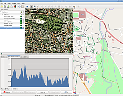
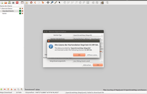
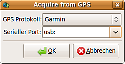
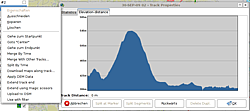

Viking
Dieser Artikel wurde für die folgenden Ubuntu-Versionen getestet:
Ubuntu 16.04 Xenial Xerus
Ubuntu 14.04 Trusty Tahr
Zum Verständnis dieses Artikels sind folgende Seiten hilfreich:
Mit dem Programm Viking  können .gpx-Dateien gelesen, die enthaltenen Daten angezeigt und bearbeitet werden. Dabei können Tracks und Wegpunkte ("waypoints") erzeugt, geändert und gelöscht werden. Es ist außerdem möglich, Daten "live" von einem GPS-Gerät zu empfangen und diese anzeigen zu lassen. Die Ausgabe eines Höhen- bzw. Geschwindigkeitsprofils eines Tracks kann gleichfalls erfolgen. Weiterhin können mit Hilfe von DGM-Dateien nachträglich Höheninformationen zu den Daten hinzugefügt werden.
können .gpx-Dateien gelesen, die enthaltenen Daten angezeigt und bearbeitet werden. Dabei können Tracks und Wegpunkte ("waypoints") erzeugt, geändert und gelöscht werden. Es ist außerdem möglich, Daten "live" von einem GPS-Gerät zu empfangen und diese anzeigen zu lassen. Die Ausgabe eines Höhen- bzw. Geschwindigkeitsprofils eines Tracks kann gleichfalls erfolgen. Weiterhin können mit Hilfe von DGM-Dateien nachträglich Höheninformationen zu den Daten hinzugefügt werden.
Die Karten des OSM-Projekts (Osmarender, Mapnik, Maplint und Cycle) sowie von BlueMarble  sind einladbar.
sind einladbar.
Hinweis:
Die voreingestellte Karte von MapQuest ist nach einer Änderung der Nutzungsbedingungen im Juni 2016 nicht mehr ohne weiteres kostenlos nutzbar.
|  |
| Programmfenster |
Installation¶
Viking kann über das Paket
viking (universe)
 mit apturl
mit apturl
Paketliste zum Kopieren:
sudo apt-get install viking
sudo aptitude install viking
Grundlagen¶
Beim ersten Programmstart erhält man die Abfrage: "Seems to be the very first run. Do you wish to enable automatic internet features?", die man getrost mit "Ja" beantworten kann.
Danach sieht man unter der Menüleiste eine Symbolleiste, links im Auswahlfenster alle eingeladenen Bildebenen aufgelistet sowie angezeigte Bildebenen im Hauptfenster. Wie bei einem Grafikprogramm liegen mehrere Ebenen übereinander mit der im Auswahlfenster obersten auch obendrauf. Für alle Arbeiten muss zuerst eine entsprechende Ebene erzeugt werden.
Karte einladen¶
|  |
| Kartenauswahl |
Zunächst einmal braucht man eine Karte als Hintergrund für alles Weitere. Unter "Layers -> Neue Map Ebene" wählt man die gewünschte Karte aus und klickt "Autodownload Maps" an. Mit Strg + + und Strg + - kann vergrößert und verkleinert werden. Die Karte startet bei 0° Länge und 0° Breite. Möchte man zu einem bestimmten Ort, gibt man diesen unter "View -> Goto location" ein und die Karte fährt dorthin.
An Karten stehen zur Verfügung (16.04):
Bing-Aerial
OpenStreetMap (MapQuest)
OpenstreetMap (Mapnik)
OpenStreetMap (Cycle)
OpenStreetMap (Transport)
OpenStreetMap (Humanitarian)
on Disk OSM Tile Format
MBTiles file
OSM Metatiles
BlueMarble
CalTopo USGS 7.5‘‘ Topos
Public Transport Map
OpenSeaMap
Für die Terraserverkarten muss vorher auf "UTM Modus" umgestellt werden durch Anklicken unter dem Menüpunkt "View" (Standard ist "Mercator Modus"). Diese Karten werden unter 16.04 nicht mehr angeboten.
Vor dem Einladen einer Karte müssen die Lizenzbestimmungen zur Kenntnis genommen werden.
Mehrere Karten¶
Es können mehrere Karten eingeladen werden, wobei mit den Pfeiltasten links unten die Reihenfolge der Anzeige verändert werden kann. Die Karten verhalten sich synchron beim Zoomen und Verschieben.
Zusätzlich kann man für einzelne Karten mit dem Schieberegler unter "Alpha" die Transparenz einstellen, wodurch mehrere Karten übereinandergelegt sichtbar werden. Beispielsweise um eine Fahrradroute auch auf der Straßen- oder Höhenkarte anzuschauen, können die Karten einzeln durch Wegklicken des Häkchens im Auswahlfenster vorübergehend deaktiviert werden.
Mit Gerät verbinden¶
|  |
| Tracks |
Durch die Nutzung von GPSBabel kann das Programm mit vielen GPS-Geräten von Garmin und Magellan kommunizieren. Es muss jedoch Schreib- und Leserecht für den Empfänger bestehen und die richtige Anbindung (usb oder seriell) ausgewählt werden. Weitere Informationen für einige Geräte von Garmin kann man in Artikel Garmin eTrex Legend / Vista HCx finden.
Mit Tracks arbeiten¶
vom Gerät herunterladen¶
Wählt man "File -> Acquire -> From GPS" hat man Gelegenheit, die Einstellungen Garmin oder Magellan zu wählen sowie die Anbindung. Standard ist serieller Port /dev/ttyS0. Für USB-Anschluss auf usb: umstellen. Anschließend wird vom Gerät herunterladen und die Ebene "Acquired from GPS" erzeugt.
aus dem PC einladen¶
Gespeicherte Tracks werden mit "File -> Öffnen" eingelesen. Das Format .gpx wird verarbeitet, .kml und andere jedoch nicht.
Geladene Tracks anzeigen¶
Im Auswahlfenster links erscheinen die geladenen Dateien. Öffnet man diese durch Klick auf das kleine schwarze Dreieck links, kann man mit einem  Rechtsklick auf einem Track diesen mit mehreren Optionen (z.B. "Gehe zum Startpunkt") anzeigen lassen. Die Karte positioniert sich und wählt den geeigneten Vergrößerungsmaßstab.
Rechtsklick auf einem Track diesen mit mehreren Optionen (z.B. "Gehe zum Startpunkt") anzeigen lassen. Die Karte positioniert sich und wählt den geeigneten Vergrößerungsmaßstab.
Wegpunkt erstellen¶
Unter "Tools -> Wegpunkt erstellen" kann man mit Rechtsklick auf eine gewünschte Stelle dort einen Wegpunkt erzeugen.
Tracks erstellen¶
Zuerst wird eine Trackebene erzeugt mit "Layers -> New TrackWaypoint Layer". Die Funktion "Tools -> Track erstellen" wird nach Anwählen dieses Tracks verfügbar. Man kann wie beschrieben den ersten Wegpunkt setzen, nachdem man dem neuen Track einen Namen geben hat. Jeder weitere Klick fügt dem Track einen Punkt hinzu, bis man mit Doppelklick den Vorgang beendet. Um einen Track fortzuführen, klickt man ihn mit Rechtsklick an und wählt "Extend Track End". Das graphische Symbol "Create Track" erlaubt es alternativ, einen angefangenen Track zu verlängern, z.B. wenn man zwischenzeitlich die Karte verschoben hat.
Es ist derzeit (Version 1.3) nicht möglich Datum und Zeit eines Trackpunktes zu bearbeiten. Es gibt die Möglichkeit den Track als gpx-Datei zu exportieren und anschließend mit GPSBabel in eine unicsv-Datei umzuwandeln. Diese (uni)csv-Datei wird mit einem beliebigen Texteditor oder einer Tabellenkalkulations-Anwendung bearbeitet. Es müssen die beiden neuen Spalten date (Datum, z.B. 2012-07-01) und time (Zeit, z.B. 16:30:00) hinzugefügt werden, jeweils mit dem Titel in der ersten Zeile. Danach wird die modifizierte csv-Datei wieder in eine gpx-Datei zurückgewandelt und in Viking geöffnet.
Tracks bearbeiten¶
Unter "Tools -> Track bearbeiten" wird ein geladener Track bearbeitbar: Klickt man einen Wegpunkt an, öffnet sich ein Kontextmenü, mit dem dieser Punkt verschoben oder der Track geteilt werden kann. So kann der Track geteilt und z.B. unerwünschte Schleifen herausgelöscht werden.
Tracks auswerten¶
|  |
| Höhenprofil |
Mit Rechtsklick auf einen Track und Auswahl von "Eigenschaften" erhält man eine statistische Auswertung "Statistics". Unter "Elevation-distance" gibt es das Höhenprofil der geladenen Strecke.
Magic Scissors¶
Diese Funktion, welche auf Google Maps basierte, ist derzeit nicht funktionsfähig.
Auf das Gerät hochladen¶
Als erstes erstellt man mit "Layers -> Neue GPS Ebene"eine solche, wählt den Track aus, kopiert oder schneidet aus und fügt ihn in der GPS Ebene ein. Rechtsklick bietet jetzt die Möglichkeit "Upload to GPS".
Es muss die Meldung "Done" erscheinen, sonst hat es nicht geklappt.
Auf OpenStreetMap hochladen¶
Man aktiviert die TrackWaypoint Ebene durch Anklicken, Rechtsklick und wählt "Upload to OSM". Man wird nach seinen Anmeldedaten für OSM gefragt.
Realtime Tracking¶
auf deutsch: Echtzeit-Spurbildung
Durch Realtime Tracking ist es möglich, die Bewegung eines GPS-Empfängers (und damit des Computers) in Echtzeit zu verfolgen. Um Realtime Tracking nutzen zu können, muss das Hintergrundgrund-Programm gpsd installiert und für den verwendeten GPS-Empfänger konfiguriert sein. Damit Viking die aktuelle Position anzeigt, wird mit "Layers -> Neue GPS Ebene" das Menü "Layer Properties" geöfnet und im Reiter "Realtime Tracking Mode" die GPSD-Verbindungsdaten eingegeben. Ist ein Gerät angeschlossen und eine GPS-Ebene aktiv, erscheint der Punkt "GPS Realtime Tracking" automatisch.
Höhenprofil hinzufügen¶
Zuerst müssen Daten für das DGM heruntergeladen werden:
Aktiviert man "Layers -> NEW DEM Layer", erscheint im Auswahlfenster links ein neuer Punkt "DEM".
Speichern¶
Mit "File -> Save as" sollte man seine Arbeit speichern, damit die beim nächsten Start mit "File -> Öffnen" geladen und sofort wieder genutzt werden kann. Zum Verschicken an Freunde bietet sich unter "File -> Generate Image File" die Möglichkeit, das Ergebnis im Hauptfenster als Bilddatei wahlweise als .jpg oder als .png abzuspeichern.
Weiterführende Informationen¶
Eine ausführlichere Anleitung findet sich hier

Mehr zum Thema GPS findet sich unter kowoma.de
Problembehebung¶
Google Maps Karten lassen sich nicht nutzen¶
Bis zur Version 0.97 wurden Google Maps, Google Earth und Google Terrain unterstützt. Auf Bitten von Google hin wurden diese Funktionen ab Version 0.98 aus dem Programm entfernt. Über das Menü "Tools -> Webtools" kann Google Maps im Browser aufgerufen werden.
- Erstellt mit Inyoka
-
 2004 – 2017 ubuntuusers.de • Einige Rechte vorbehalten
2004 – 2017 ubuntuusers.de • Einige Rechte vorbehalten
Lizenz • Kontakt • Datenschutz • Impressum • Serverstatus -
Serverhousing gespendet von